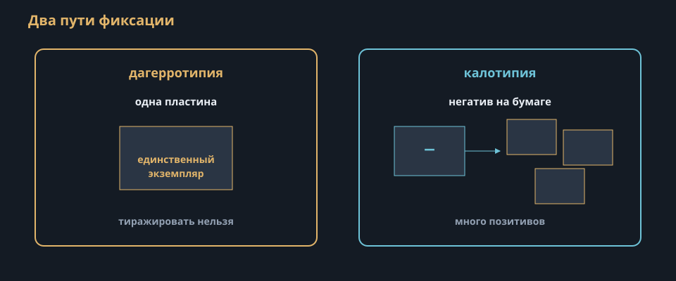
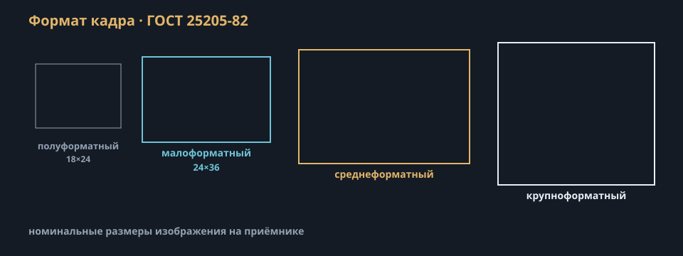

f01-dzz-cycle.svg
f01-camera-obscura.svg
f01-daguerre-calotype.svg
f01-ccd-cmos.svg
f01-crop-factor.svg
f01-sensor-sizes.svg
f01-camera-pipeline.svg
f01-pasm.svg
f01-gost-formats.svgПодключены к слайдам. Папка images/schemes/
f01-dzz-cycle.svgf01-camera-obscura.svg
f01-daguerre-calotype.svgf01-ccd-cmos.svgf01-crop-factor.svgf01-sensor-sizes.svgf01-camera-pipeline.svgf01-pasm.svg
f01-gost-formats.svg